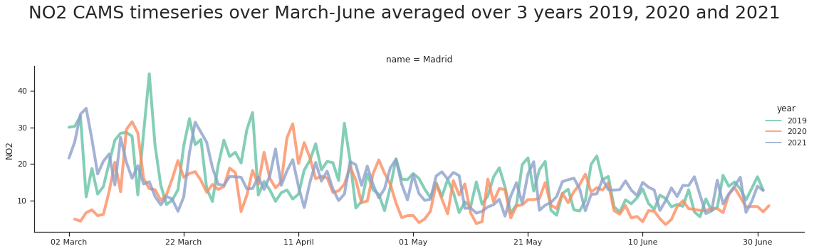
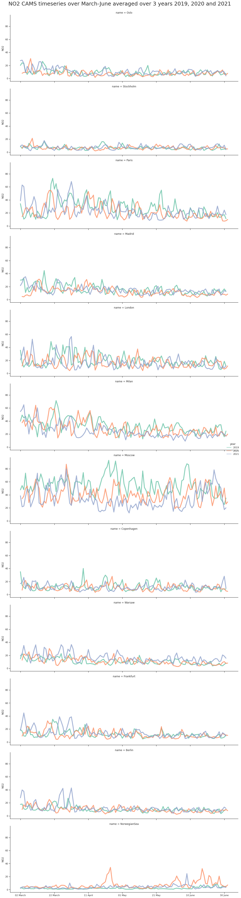

Jupyter notebook comparing CAMS and air quality measurements
Contents

Jupyter notebook comparing CAMS and air quality measurements¶
This Jupyter notebook is distributed under MIT License
This Jupyter notebook shows how compare CAMS with observations such as EBAS data
This notebook uses the Copernicus Atmosphere Monitoring products previously retrieved from the RELIANCE datacube resources and compare with observations on selected locations.
Background¶
In this study, we are comparing air quality analysis from Copernicus Atmosphere Monitoring Service with observations such as EBAS data.
Python packages¶
Additional packages need to be installed to run this Jupyter notebook on default EGI notebook environment
pip install rohub cmcrameri seaborn
WARNING: The directory '/home/jovyan/.cache/pip' or its parent directory is not owned or is not writable by the current user. The cache has been disabled. Check the permissions and owner of that directory. If executing pip with sudo, you may want sudo's -H flag.
Requirement already satisfied: rohub in /srv/conda/envs/notebook/lib/python3.9/site-packages (1.0.0.post1)
Requirement already satisfied: cmcrameri in /srv/conda/envs/notebook/lib/python3.9/site-packages (1.4)
Requirement already satisfied: seaborn in /srv/conda/envs/notebook/lib/python3.9/site-packages (0.11.2)
Requirement already satisfied: matplotlib in /srv/conda/envs/notebook/lib/python3.9/site-packages (from cmcrameri) (3.5.0)
Requirement already satisfied: numpy in /srv/conda/envs/notebook/lib/python3.9/site-packages (from cmcrameri) (1.20.0)
Requirement already satisfied: pandas in /srv/conda/envs/notebook/lib/python3.9/site-packages (from rohub) (1.3.4)
Requirement already satisfied: requests in /srv/conda/envs/notebook/lib/python3.9/site-packages (from rohub) (2.26.0)
Requirement already satisfied: scipy>=1.0 in /srv/conda/envs/notebook/lib/python3.9/site-packages (from seaborn) (1.7.2)
Requirement already satisfied: python-dateutil>=2.7 in /srv/conda/envs/notebook/lib/python3.9/site-packages (from matplotlib->cmcrameri) (2.7.5)
Requirement already satisfied: fonttools>=4.22.0 in /srv/conda/envs/notebook/lib/python3.9/site-packages (from matplotlib->cmcrameri) (4.28.2)
Requirement already satisfied: cycler>=0.10 in /srv/conda/envs/notebook/lib/python3.9/site-packages (from matplotlib->cmcrameri) (0.11.0)
Requirement already satisfied: pillow>=6.2.0 in /srv/conda/envs/notebook/lib/python3.9/site-packages (from matplotlib->cmcrameri) (8.4.0)
Requirement already satisfied: kiwisolver>=1.0.1 in /srv/conda/envs/notebook/lib/python3.9/site-packages (from matplotlib->cmcrameri) (1.3.2)
Requirement already satisfied: packaging>=20.0 in /srv/conda/envs/notebook/lib/python3.9/site-packages (from matplotlib->cmcrameri) (21.3)
Requirement already satisfied: pyparsing>=2.2.1 in /srv/conda/envs/notebook/lib/python3.9/site-packages (from matplotlib->cmcrameri) (3.0.6)
Requirement already satisfied: pytz>=2017.3 in /srv/conda/envs/notebook/lib/python3.9/site-packages (from pandas->rohub) (2021.3)
Requirement already satisfied: six>=1.5 in /srv/conda/envs/notebook/lib/python3.9/site-packages (from python-dateutil>=2.7->matplotlib->cmcrameri) (1.16.0)
Requirement already satisfied: urllib3<1.27,>=1.21.1 in /srv/conda/envs/notebook/lib/python3.9/site-packages (from requests->rohub) (1.26.7)
Requirement already satisfied: idna<4,>=2.5 in /srv/conda/envs/notebook/lib/python3.9/site-packages (from requests->rohub) (3.1)
Requirement already satisfied: certifi>=2017.4.17 in /srv/conda/envs/notebook/lib/python3.9/site-packages (from requests->rohub) (2021.10.8)
Requirement already satisfied: charset-normalizer~=2.0.0 in /srv/conda/envs/notebook/lib/python3.9/site-packages (from requests->rohub) (2.0.0)
Note: you may need to restart the kernel to use updated packages.
import os
import warnings
warnings.filterwarnings('ignore')
RoHUB Authentication¶
The following lines of code will show you how to authenticate to RoHUB using your username and password.
Authenticate¶
you need to create two files in your HOME
rohub-user: contains your rohub username
rohub-pwd: add your password in this file
import rohub
rohub_user = open(os.path.join(os.environ['HOME'],"rohub-user")).read().rstrip()
rohub_pwd = open(os.path.join(os.environ['HOME'],"rohub-pwd")).read().rstrip()
rohub.login(username=rohub_user, password=rohub_pwd)
Logged successfully as annefou@geo.uio.no.
Read CAMS Timeseries¶
import pandas as pd
variables = ['NO2', 'PM2_5', 'O3']
frames = []
for var in variables:
tmp = pd.read_csv(var + '_timeseries_.csv')
tmp = tmp.rename({var: 'value'}, axis='columns')
tmp['variable'] = str(var)
frames.append(tmp)
dset = pd.concat(frames)
dset
| index | dayofyear | longitude | latitude | value | year | name | variable | |
|---|---|---|---|---|---|---|---|---|
| 0 | 0 | 60 | 10.749988 | 59.949997 | 20.149970 | 2019 | Oslo | NO2 |
| 1 | 1 | 61 | 10.749988 | 59.949997 | 24.040120 | 2019 | Oslo | NO2 |
| 2 | 2 | 62 | 10.749988 | 59.949997 | 22.647097 | 2019 | Oslo | NO2 |
| 3 | 3 | 63 | 10.749988 | 59.949997 | 10.649149 | 2019 | Oslo | NO2 |
| 4 | 4 | 64 | 10.749988 | 59.949997 | 6.273068 | 2019 | Oslo | NO2 |
| ... | ... | ... | ... | ... | ... | ... | ... | ... |
| 4387 | 117 | 177 | 1.649988 | 61.049997 | 63.704030 | 2021 | NorwegianSea | O3 |
| 4388 | 118 | 178 | 1.649988 | 61.049997 | 68.124610 | 2021 | NorwegianSea | O3 |
| 4389 | 119 | 179 | 1.649988 | 61.049997 | 67.397240 | 2021 | NorwegianSea | O3 |
| 4390 | 120 | 180 | 1.649988 | 61.049997 | 60.101208 | 2021 | NorwegianSea | O3 |
| 4391 | 121 | 181 | 1.649988 | 61.049997 | 65.213810 | 2021 | NorwegianSea | O3 |
13164 rows × 8 columns
Read Observations¶
Data Analysis and Visualization¶
import matplotlib.pyplot as plt
import matplotlib.dates as mdates
import seaborn as sns
# Apply the default theme
sns.set_theme(style="ticks", color_codes=True)
cities = dset['name'].unique()
cities
array(['Oslo', 'Stockholm', 'Paris', 'Madrid', 'London', 'Milan',
'Moscow', 'Copenhagen', 'Warsaw', 'Frankfurt', 'Berlin',
'NorwegianSea'], dtype=object)
var = 'NO2'
dsub = dset.loc[dset['variable'].isin([var])][[ 'value', 'name', 'dayofyear','year']]
dsub.head()
dsub.reset_index(inplace=True)
dsub
| index | value | name | dayofyear | year | |
|---|---|---|---|---|---|
| 0 | 0 | 20.149970 | Oslo | 60 | 2019 |
| 1 | 1 | 24.040120 | Oslo | 61 | 2019 |
| 2 | 2 | 22.647097 | Oslo | 62 | 2019 |
| 3 | 3 | 10.649149 | Oslo | 63 | 2019 |
| 4 | 4 | 6.273068 | Oslo | 64 | 2019 |
| ... | ... | ... | ... | ... | ... |
| 4387 | 4387 | 2.746786 | NorwegianSea | 177 | 2021 |
| 4388 | 4388 | 2.300753 | NorwegianSea | 178 | 2021 |
| 4389 | 4389 | 3.786756 | NorwegianSea | 179 | 2021 |
| 4390 | 4390 | 4.089678 | NorwegianSea | 180 | 2021 |
| 4391 | 4391 | 3.342616 | NorwegianSea | 181 | 2021 |
4392 rows × 5 columns
city = 'Madrid'
dsub_city= dsub.loc[dsub['name'].isin([city])][[ 'value', 'name', 'dayofyear','year']]
myFmt = mdates.DateFormatter('%d %B')
snp = sns.relplot(
data=dsub_city, kind="line",
x="dayofyear", y="value", row="name", linewidth = 4, palette=['#66c2a5', '#fc8d62', '#8da0cb'],
hue="year", style="year", height=5, aspect=3, alpha=0.8, dashes = False, facet_kws=dict(sharex=True),
)
snp.fig.suptitle(var + ' CAMS timeseries over March-June averaged over 3 years 2019, 2020 and 2021\n', size=25)
snp.set(xlabel='', ylabel=var)
plt.tight_layout()
plt.savefig('CAMS_timeseries_summary_2019_2020_2021' + city + '.png')
plt.gca().xaxis.set_major_formatter(myFmt)

myFmt = mdates.DateFormatter('%d %B')
snp = sns.relplot(
data=dsub, kind="line",
x="dayofyear", y="value", row="name", linewidth = 4, palette=['#66c2a5', '#fc8d62', '#8da0cb'],
hue="year", style="year", height=5, aspect=3, alpha=0.8, dashes = False, facet_kws=dict(sharex=True),
)
snp.fig.suptitle(var + ' CAMS timeseries over March-June averaged over 3 years 2019, 2020 and 2021\n\n\n', size=25)
snp.set(xlabel='', ylabel=var)
plt.tight_layout()
plt.savefig('CAMS_timeseries_summary_2019_2020_2021' + '.png')
plt.gca().xaxis.set_major_formatter(myFmt)
